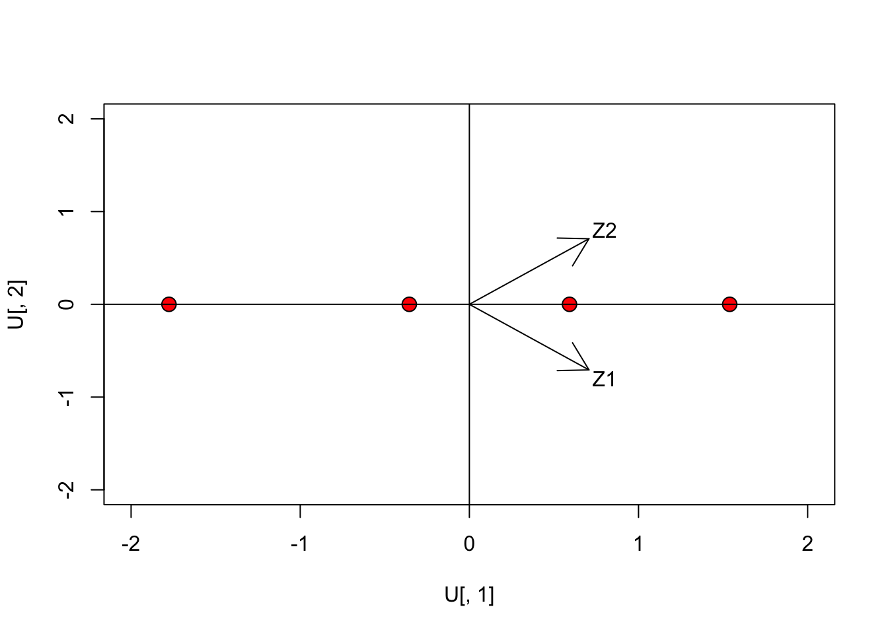
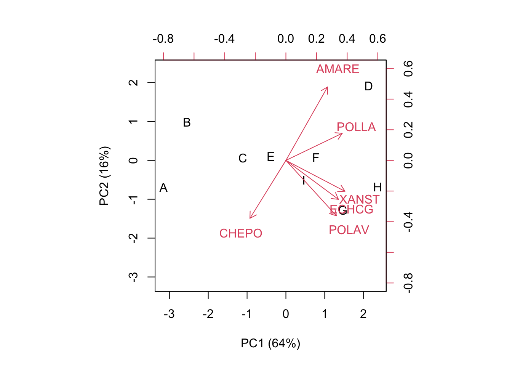
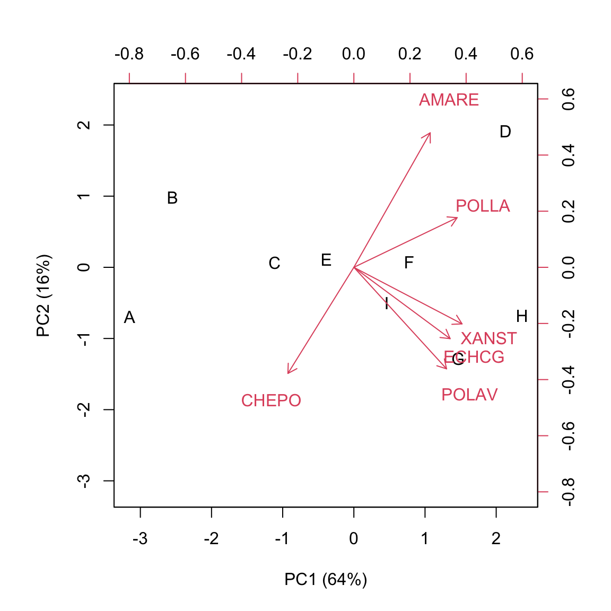
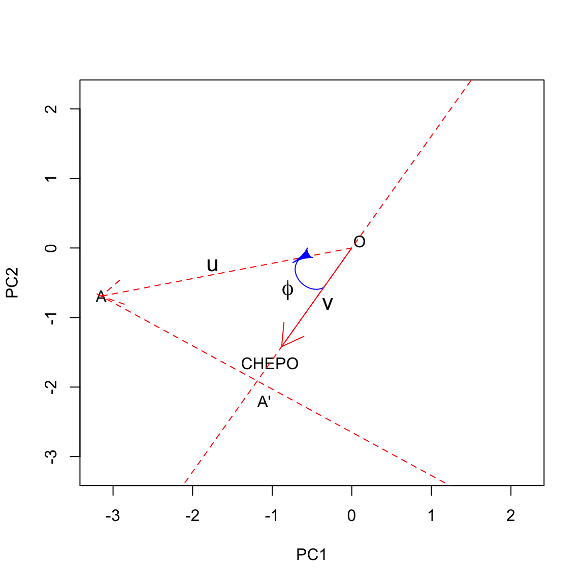
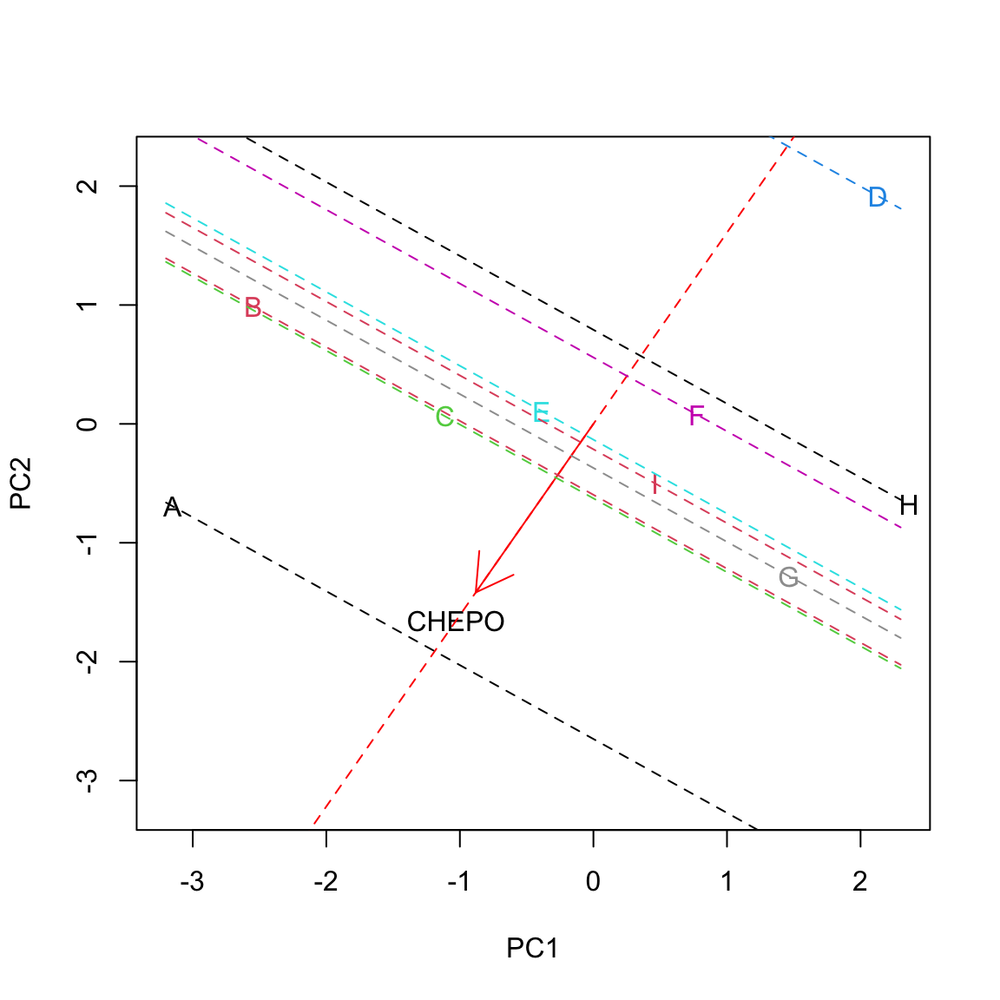
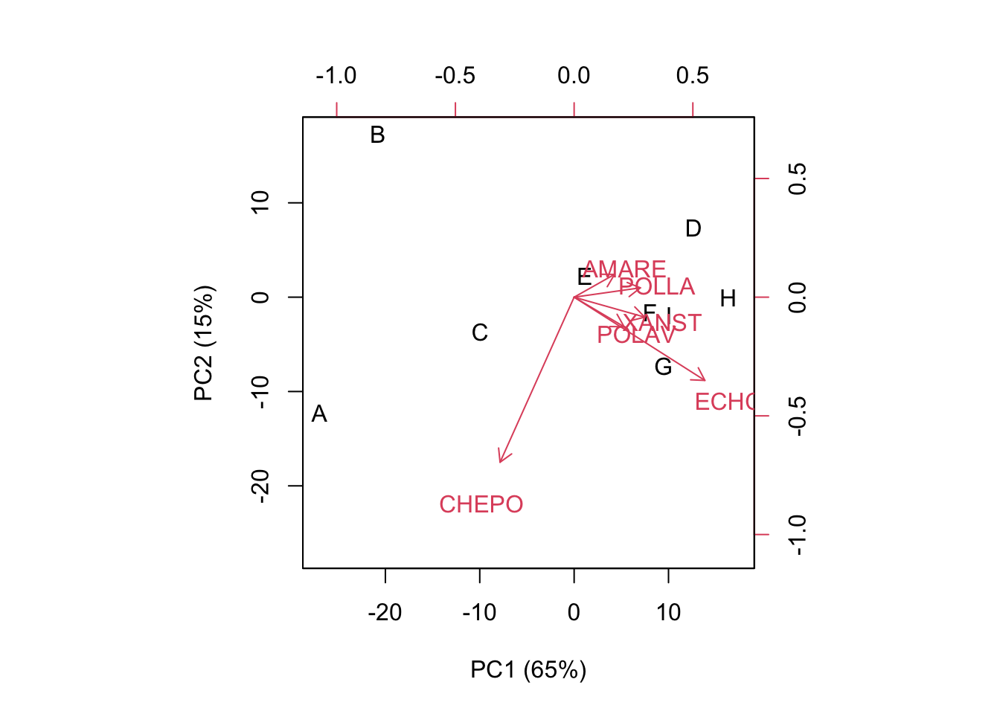

X <- c(12, 15, 17, 19)
Y <- c(24, 30, 34, 38)
dataMat <- data.frame(X, Y, row.names=letters[1:4])
print(dataMat)
## X Y
## a 12 24
## b 15 30
## c 17 34
## d 19 38In this post I am revisiting the concept of Principal Component Analysis (PCA). You might say that there is no need for that, as the Internet is full with posts relating to such a rather old technique. However, I feel that, in those posts, the theoretical aspects are either too deeply rooted in maths or they are skipped altogether, so that the main emphasis is on interpreting the output of an R function. I think that both approaches may not be suitable for biologists: the first one may be too difficult to understand, while skipping altogether the theoretical aspects promotes the use of R as a black-box, which is dangerouse for teaching purposes. That’s why I wrote this post… I wanted to make my attempt to create a useful lesson. You will tell me whether I suceeded or not.
What is Principal Component Analysis?
A main part of field experiments is multivariate, in the sense that several traits are measured in each experimental unit. For example, think about yield quality in genotype experiments or about the composition of weed flora in herbicide trials: in both cases, it is very important to consider several variables altogether, otherwise, we lose all information about the relationships among the observed variables and we lose the ability of producing a convincing summary of results.
Multivariate methods can help us to deal with multivariate datasets. One main task of multivariate analysis is ordination, i.e. organising the observations so that similar subjects are near to each other, while dissimilar subjects are further away. Clearly, ordination is connected to ‘representation’ and it is aided by techniques that permit a reduction in the number of variables, with little loss in terms of descriptive ability.
Principal Component Analysis (PCA) is one of these techniques. How can we reduce the number of variables? How can we use, say, two variables instead of six, without losing relevant information? One possibility is to exploit the correlations between pairs of variables: whenever this is high, both variables carry a similar amount of information and there may be no need of using both of them.
Let’s make a trivial example: think about four subjects where we measured two variables (X1 and X2), with the second one being exactly twice as much the first one. As we know, these four subjects and their characteristics take the form of a 4 x 2 matrix, which is shown below.
As I said, this example is trivial: it is indeed totally clear that the second variable does not add any additional information with respect to the first one, and thus we could as well drop it without hindering the ordination of the four subjects. Nevertheless, naively dropping a variable may not be optimal whenever the correlation is less then perfect! What should we do, then?
First of all, we should note that the two variables have different means and standard deviations. Thus, we might like to center and, possibly, standardise them. The first practice is necessary, while the second one is optional and it may dramatically change the interpretation of results. Therefore, when you write your paper, please always inform the readers whether you have standardised or not! When we work on centered (not standardised) data, we usually talk about PCA on covariance matrix, while, when we work on standardised data, we talk abot PCA on correlation matrix. The reason for these namings will be clear later on.
Let’s standardise the data, and represent them in the Euclidean space: in this specific case the points (subjects) lie along the bisector of first and third quadrant (all points have equal co-ordinates).
Z <- scale(dataMat, scale=T, center=T)[1:4,1:2]
Z
## X Y
## a -1.2558275 -1.2558275
## b -0.2511655 -0.2511655
## c 0.4186092 0.4186092
## d 1.0883839 1.0883839
PCA: a ‘rotation’ procedure
From the previous graph we may note that it would be useful to rotate the axes by an angle of 45°; in this case, the points will lie along the x-axis and they would all have a null co-ordinate on the y-axis. As the consequence, this second dimension would be totally useless.
Rotating the axes is a matrix multiplication problem: we have to take the \(Z\) and multiply it by a rotation matrix, to get the co-ordinates of subjects in the new reference system. We do not need the details: if we want to rotate by an angle \(\alpha\), the rotation matrix is:
\[V = \left[\begin{array}{cc} \cos \alpha & - \sin \alpha \\ \sin \alpha & \cos \alpha \end{array} \right]\]
In our case (\(\alpha = 45° = \pi/4\)), it is:
\[V = \left[\begin{array}{cc} \frac{\sqrt{2}}{2} & - \frac{\sqrt{2}}{2} \\ \frac{\sqrt{2}}{2} & \frac{\sqrt{2}}{2} \end{array} \right]\]
PCA: a eigenvalue decomposition procedure
How do we get the rotation matrix, in general? We take the correlation matrix and submit it to eigenvalue decomposition:
corX <- cor(dataMat)
eig <- eigen(corX)
eig
## eigen() decomposition
## $values
## [1] 2 0
##
## $vectors
## [,1] [,2]
## [1,] 0.7071068 -0.7071068
## [2,] 0.7071068 0.7071068
V <- eig$vectorsWe see that the eigenvectors of this decomposition correspond to the aforementioned rotation matrix. We can now use \(V\) to rotate the original matrix \(Z\) and calculate the coordinates of the original observations in the new, rotated space. We store the subject scores in the matrix \(U\):
U <- Z %*% V
print(round(U, 3) )
## [,1] [,2]
## a -1.776 0
## b -0.355 0
## c 0.592 0
## d 1.539 0We have seen that:
\[U = Z V\]
Therefore:
\[Z = U V^T\]
In words, we have decomposed our original standardised matrix \(Z\) into the product of two matrices, \(U\) and \(V\). That is, we have made a factor decomposition of our dataset.
PCA: a linear combination procedure
Look at the \(Z\) and \(V\) matrices above. Matrix multiplication consists of a row-column operation, such as:
\[ -1.256 \times 0.707 + (-1.256 \times 0.707) = -1.776 \]
We see that what we are doing is indeed a linear combination of the observed variables, by using the coefficients in \(V\).
Whatever way we look at our PCA, we can now plot the subjects in the new, rotated space:
#Plot
plot(U[,1], U[,2], cex=1.5, pch=21, bg="red",
xlim=c(-2,2), ylim=c(-2,2))
abline(h=0, lty=1)
abline(v=0, lty=1)
arrows(0, 0, V[1,1], V[1,2])
arrows(0, 0, V[2,1], V[2,2])
text(0.8, -0.8, "Z1")
text(0.8, 0.8, "Z2")
The arrows represent the row-vectors of the rotation matrix: they are the directions of the original axes on the rotated space. We clearly see that the second dimension is totally unnecessary, as we already have a perfect ordination in one dimension. We have performed a rank reduction in our dataset.
Some preliminary conclusions
- PCA consists of a rotation of the original space
- In the new space, the first dimension (first principal component) is selected so that it preserves the maximum amount of the original data variability, the second principal component one so that it preserves the maximum amount of the residual data variability
- Therefore, I can select a subspace of dimensions (components) and have the objects projected in reduced rank space
A more realistic example
Let’s look at a simple (perhaps too simple), but real example. This is an herbicide trial, where we compared the weed control ability of nine sugarbeet herbicides. Ground covering for six weed species was recorded; the weed species were Polygonum lapathyfolium, Chenopodium polyspermum, Echinochloa crus-galli, Amaranthus retroflexus, Xanthium strumarium and Polygonum aviculare; they were identified by using their BAYER code (the first three letters of the genus name and the first two letters of the species name). The aim of the experiment was to ordinate herbicide treatments in terms of their weed control spectra.
The dataset is available in the ‘statforbiology’ package, it is a dataframe, although we’d better convert it into the matrix \(X\) for further analyses.
library(statforbiology)
WeedPop <- getAgroData("WeedPop")
X <- WeedPop[,2:7]
row.names(X) <- WeedPop[,1]
X
## POLLA CHEPO ECHCG AMARE XANST POLAV
## A 0.1 33 11 0 0.1 0.1
## B 0.1 3 3 0 0.1 0.0
## C 7.0 19 19 4 7.0 1.0
## D 18.0 3 28 19 12.0 6.0
## E 5.0 7 28 3 10.0 1.0
## F 11.0 9 33 7 10.0 6.0
## G 8.0 13 33 6 15.0 15.0
## H 18.0 5 33 4 19.0 12.0
## I 6.0 6 38 3 10.0 6.0The dataset is rather small, although a graphical representation would be very difficult with six weed species. However, there must be some correlation between one weed species and the others, as herbicides may have similar weed control spectra. Therefore, PCA might be the right tool for rank reduction and ordination.
Preliminary actions
First of all, we need to decide whether we want to standardise the data. In this case, some variables have higher variances with respect to others. Therefore, they might end up having higher weight in the ordination, with respect to those with lower variances. We store the standardised data into the matrix \(Z\):
Z <- as.matrix( scale(X, scale=T) )
print(Z, digits=3)
## POLLA CHEPO ECHCG AMARE XANST POLAV
## A -1.2186 2.267 -1.206 -0.895 -1.469 -0.952
## B -1.2186 -0.809 -1.890 -0.895 -1.469 -0.971
## C -0.1719 0.832 -0.522 -0.195 -0.361 -0.785
## D 1.4967 -0.809 0.247 2.432 0.443 0.142
## E -0.4753 -0.399 0.247 -0.370 0.121 -0.785
## F 0.4349 -0.194 0.674 0.331 0.121 0.142
## G -0.0202 0.216 0.674 0.156 0.925 1.812
## H 1.4967 -0.604 0.674 -0.195 1.567 1.255
## I -0.3236 -0.501 1.102 -0.370 0.121 0.142
## attr(,"scaled:center")
## POLLA CHEPO ECHCG AMARE XANST POLAV
## 8.13 10.89 25.11 5.11 9.24 5.23
## attr(,"scaled:scale")
## POLLA CHEPO ECHCG AMARE XANST POLAV
## 6.59 9.75 11.70 5.71 6.22 5.39What does this standardised matrix represent? A few hints:
- negative values indicate weed coverings below column-average
- positive values indicate weed coverings above column-average
- weed coverings are expressed as standard deviation units: a value of 1 indicate that we are one standard deviation above the column-average.
Eigenvalue decomposition
Let’s get the eigenvalues and eigenvectors of the correlation matrix:
pca <- eigen( cor(X) )
d <- pca$values
V <- pca$vectors
row.names(V) <- colnames(WeedPop[,2:7])
colnames(V) <- paste("PC", 1:6, sep="")
print(V, digits=3)
## PC1 PC2 PC3 PC4 PC5 PC6
## POLLA 0.460 0.221 -0.24985 0.1658 0.641 0.4884
## CHEPO -0.294 -0.473 -0.82077 -0.0553 0.106 -0.0492
## ECHCG 0.429 -0.318 0.04360 -0.7830 -0.178 0.2617
## AMARE 0.340 0.599 -0.50839 -0.0570 -0.460 -0.2285
## XANST 0.482 -0.252 0.05955 0.0369 0.338 -0.7651
## POLAV 0.413 -0.452 -0.00164 0.5931 -0.470 0.2300
print(d)
## [1] 3.85798046 0.93663779 0.67502915 0.30394443 0.19203762 0.03437055Now, we can use the rotation matrix V to get the coordinates of our subjects in the new rotated space (\(U\)):
U <- Z %*% V
row.names(U) <- LETTERS[1:9]
colnames(U) <- paste("PC", 1:6, sep="")
print(U, digits=3)
## PC1 PC2 PC3 PC4 PC5 PC6
## A -3.149 -0.6934 -1.2399 0.0492 0.0360 0.0871
## B -2.546 0.9861 1.2551 0.7437 -0.1589 0.0553
## C -1.111 0.0642 -0.5837 -0.1334 0.4072 -0.1219
## D 2.131 1.9161 -0.9096 0.0616 -0.2061 -0.0262
## E -0.387 0.1079 0.6533 -0.6903 0.1889 -0.3369
## F 0.776 0.0767 -0.0814 -0.3752 -0.0397 0.2627
## G 1.463 -1.2798 -0.1703 0.5564 -0.7200 -0.1704
## H 2.362 -0.6767 0.3413 0.5668 0.8051 0.0711
## I 0.462 -0.5010 0.7353 -0.7787 -0.3124 0.1793We now have the three ingredients of a PCA, i.e.:
- the original standardised matrix (\(Z\))
- the matrix of ‘subject-scores’ (\(U\))
- the matrix of ‘trait-scores’ (\(V\): rotation matrix)
What are the characteristics of subject-scores (U)?
We have said that subject-scores in \(U\) represent our subjects in the new, rotated space. We have six original variables and six PCs (indeeed, the number of PCs is equal to the lowest between the number of rows and the number of columns in the original matrix X). Let’s see some characteristics of subject scores:
apply(U, 2, mean)
## PC1 PC2 PC3 PC4 PC5
## -2.097088e-16 1.480297e-16 0.000000e+00 -4.934325e-17 -4.934325e-17
## PC6
## 1.387779e-16
apply(U, 2, var)
## PC1 PC2 PC3 PC4 PC5 PC6
## 3.85798046 0.93663779 0.67502915 0.30394443 0.19203762 0.03437055
cor(U)
## PC1 PC2 PC3 PC4 PC5
## PC1 1.000000e+00 -2.460460e-16 4.878252e-16 -2.504542e-16 -7.105876e-16
## PC2 -2.460460e-16 1.000000e+00 3.868083e-16 -8.572410e-17 9.518920e-16
## PC3 4.878252e-16 3.868083e-16 1.000000e+00 -6.780676e-16 -1.068809e-15
## PC4 -2.504542e-16 -8.572410e-17 -6.780676e-16 1.000000e+00 1.414392e-15
## PC5 -7.105876e-16 9.518920e-16 -1.068809e-15 1.414392e-15 1.000000e+00
## PC6 1.075687e-15 4.638006e-16 -9.374150e-17 -2.019798e-16 -3.407380e-15
## PC6
## PC1 1.075687e-15
## PC2 4.638006e-16
## PC3 -9.374150e-17
## PC4 -2.019798e-16
## PC5 -3.407380e-15
## PC6 1.000000e+00
#Distances
dist(U)
## A B C D E F G H
## B 3.151284
## C 2.317658 2.722462
## D 5.905129 5.282416 3.804313
## E 3.550451 2.850970 1.568730 3.587558
## F 4.190097 3.867798 2.054301 2.491515 1.550448
## G 4.863326 4.862117 3.217457 3.425880 2.903991 1.959146
## H 5.808357 5.353306 3.762687 3.102872 3.224662 2.213925 1.954319
## I 4.218553 3.727084 2.358123 3.477388 1.274494 1.158964 2.120882 2.620524
dist(Z)
## A B C D E F G H
## B 3.151284
## C 2.317658 2.722462
## D 5.905129 5.282416 3.804313
## E 3.550451 2.850970 1.568730 3.587558
## F 4.190097 3.867798 2.054301 2.491515 1.550448
## G 4.863326 4.862117 3.217457 3.425880 2.903991 1.959146
## H 5.808357 5.353306 3.762687 3.102872 3.224662 2.213925 1.954319
## I 4.218553 3.727084 2.358123 3.477388 1.274494 1.158964 2.120882 2.620524Thus:
- The PCs for subject-scores have means equal to 0
- The PCs for subject scores have variances equal to the corresponding eigenvalue
- The sum of variances for the PCs is equal to the sum of variances for the original standardised variables (i.e. 6)
- the first PC has the highest variance, while the following PCs have progressively decreasing variances
- Euclidean distances among subjects are preserved in the new rotated space
- PCs are uncorrelated
What are the characteristics of trait-scores (V)?
The rotation matrix \(V\) has one row for each of the original variables and six columns. It gives one relevant information: the scores are proportional to the correlation between the PC scores in U and the original variables. This may need an explanation.
When we look at \(U\) we do not have any hints on how the components relate to the original matrix \(Z\). For example, we see that the subject ‘A’ has a score on PC1 equal to \(-3.15\); what does this mean in terms of weed infestation? There were a lot of weeds or a few weeds? One way to ascertain this is to look at the correlation between the principal components in \(U\) and the original variables in \(X\):
print( cor(X, U), digits = 3)
## PC1 PC2 PC3 PC4 PC5 PC6
## POLLA 0.904 0.214 -0.20528 0.0914 0.2809 0.09055
## CHEPO -0.577 -0.457 -0.67435 -0.0305 0.0464 -0.00913
## ECHCG 0.842 -0.307 0.03582 -0.4317 -0.0780 0.04852
## AMARE 0.668 0.580 -0.41769 -0.0314 -0.2016 -0.04236
## XANST 0.946 -0.244 0.04892 0.0203 0.1480 -0.14185
## POLAV 0.811 -0.438 -0.00135 0.3270 -0.2058 0.04265We see that PC1 in \(U\) is highly correlated with POLLA, XANST and ECHCG; therefore, the subjects ‘A’, with a very low score in PC1, is expected to have a low ground covering for the aforementioned weed species. The above correlations are known as loadings.
If we look at the rotation matrix \(V\), we note that trait-scores are proportional to the correlations between subject scores and the original variables (see below).
cors <- cor(X, U)
print( cors/V, digits = 3)
## PC1 PC2 PC3 PC4 PC5 PC6
## POLLA 1.96 0.968 0.822 0.551 0.438 0.185
## CHEPO 1.96 0.968 0.822 0.551 0.438 0.185
## ECHCG 1.96 0.968 0.822 0.551 0.438 0.185
## AMARE 1.96 0.968 0.822 0.551 0.438 0.185
## XANST 1.96 0.968 0.822 0.551 0.438 0.185
## POLAV 1.96 0.968 0.822 0.551 0.438 0.185Therefore, the rotation matrix V can help us understand the meaning of subject-scores in relation to the traits under study. We’ll get back to this in a few minutes.
In summary, we can say that trait-scores relate to the correlations between subject-scores and the original variables in X
Inner products of subject-scores and trait-scores
We have seen that:
\[U = Z \, V\]
where \(U\) is the matrix of subject-scores. Thus:
\[Z = U V^T\]
Indeed, we have decomposed our original matrix \(Z\) into the product of two matrices: \(U\) and \(V\). This multiplication can be seen as the ‘inner-products’ of row-vectors in \(U\) (subject-scores) by the row-vectors in \(V\) (trait-scores), which return the original values in \(X\). For example, the PC scores for the herbicide ‘A’ are:
U[1,]
## PC1 PC2 PC3 PC4 PC5 PC6
## -3.14916165 -0.69341377 -1.23990604 0.04915220 0.03599628 0.08713997The scores for POLLA (see first row of V) are:
V[1,]
## PC1 PC2 PC3 PC4 PC5 PC6
## 0.4600611 0.2211836 -0.2498484 0.1657640 0.6410762 0.4884065The inner product for these two vectors is:
-3.14916165 * 0.4600611 +
-0.69341377 * 0.2211836 +
-1.23990604 * -0.2498484 +
0.04915220 * 0.1657640 +
0.03599628 * 0.6410762 +
-0.08713997 * -0.4884065
## [1] -1.218606which corresponds, exactly, to the standardised weed covering for POLLA treated with the herbicide ‘A’, i.e. the value in the first row and first column in the original standardised matrix \(Z\).
In general: The inner products of subject-score row-vectors and trait-score row-vectors return the observed values in the standardised matrix \(Z\).
A brief recap
At the moment, we have three main ‘ingredients’:
- Our starting matrix (\(Z\)), containing information about herbicidess and weed coverings
- A subject-score matrix (\(U\)), containing some information about the herbicides (e.g. their distances)
- A rotation matrix (\(V\)), which contains some information about the original variables (e.g how they correlate with principal components)
- The inner products of row-vectors in \(U\) and row-vectors in \(V\) return the original standardised observations \(Z\).
It is clear that \(U\) and \(V\), if taken together, contain all information available in \(Z\).
What’s the matter then?
You might say that we have not made much gain, so far! Well, this is not true, indeed. The Eckart-Young theorem says that we do not need to take all columns in \(U\) and all columns in \(V\), as a reduced number of them will give us the best possible representation in reduced space. In other words, if we take, e.g., three columns of \(U\) and three columns of \(V\), we will get the best possible representation of \(Z\) in a space of dimension equal to three. Likewise, if we take, two columns of \(U\) and two columns of \(V\), we will get the best possible representation of \(Z\) in a space of dimension equal to two.
The question is: how many columns should we take? The six original variables had a total variance of 6. Six PC in \(U\) have a total variance of 6, so the quality of representation is 100%. Five PCs in \(U\) have a total variance of 5.97, so the quality of representation is 99.4%. In general we have a quality of:
cumsum(d)/6 * 100
## [1] 64.29967 79.91030 91.16079 96.22653 99.42716 100.00000We see that two components give a quality of representation of almost 80%, which is very good. Furthermore, according to the Kaiser criterion, we can remove all components with a variance lower than 1, i.e. those components with a lower variance than the original standardised variables. This criterion confirms that two components are more then enough to represent our original dataset. Of course, the representation is not perfect: we see that the following product:
print( U[,1:2] %*% t(V[,1:2]), digits=3)
## POLLA CHEPO ECHCG AMARE XANST POLAV
## A -1.602 1.2527 -1.130 -1.486 -1.343 -0.9865
## B -0.953 0.2819 -1.405 -0.275 -1.475 -1.4971
## C -0.497 0.2961 -0.497 -0.339 -0.552 -0.4878
## D 1.404 -1.5316 0.305 1.872 0.544 0.0134
## E -0.154 0.0627 -0.200 -0.067 -0.214 -0.2085
## F 0.374 -0.2641 0.308 0.310 0.354 0.2856
## G 0.390 0.1753 1.034 -0.269 1.027 1.1824
## H 0.937 -0.3741 1.228 0.398 1.309 1.2812
## I 0.102 0.1010 0.357 -0.143 0.349 0.4174does not return exactly our original matrix \(Z\), but it gives the best possible approximation in reduced rank space.
Principal components as an ordination method
So far, we have seen that we can use two principal components in place of the six original variables, losing only a minor part of information. We have, therefore, solved the problem of rank reduction: the two principal components can be used in further analyses, such as cluster analysis or regression analysis, wherever using a low number of meaningful variables may be convenient. In this sense, principal component analysis may be prodromic to the adoption of other statistical methods.
However, in many instances, PCA is used as a method of ordination, in order to understand how similar are the subjects and which variables contribute to the observed differences among subjects. We have already mentioned that we can look at \(U\) and \(V\) to understand what was the presence of weeds with the different herbicides. Another example: the herbicide ‘H’ has a high positive score on PC1 and low negative score on PC2; therefore, it is characterised by a high ground covering (above average) for weeds with positive scores on PC1 (POLLA, ECHCG, XANST, POLAV) and negative scores on PC2 (CHEPO, ECHCG, XANST, POLAV).
Instead of simply looking at the matrices \(U\) and \(V\), we can draw a typical kind of plot, which shows both subject-scores and trait-scores and, for this reason, it is known as ‘biplot’.
The ‘biplot’
As I said, a ‘biplot’ shows two components (usually the first two) of both the subject-scores and the trait-scores. I’ll show the biplot for the ‘WeedPop’ dataset. Please note that the two matrices are not on comparable scales and the scores on \(U\) are higher than those on \(V\). Therefore, the biplot uses a double reference system.
biplot(U[,1:2], V[,1:2], xlab="PC1 (64%)",
ylab="PC2 (16%)")
Subjects scores are usually represented as symbols, while trait-scores are represented as ‘vectors’. The biplot shows a huge amount of information, such as:
- similarity of subjects (distances)
- the original values in the standardised matrix \(Z\)
Due to the characteristics of \(U\) (see above), the distances of subjects on the biplot approximate their Euclidean distances on the original matrix \(Z\). It means that distant subjects are characterised by different weed infestation levels, while close subjects are similar. What is interesting is that such a similarity/dissimilarity considers all the observed variables altogether.
We can see that the herbicides ‘C’, ‘E’, ‘F’ and ‘I’ form a relatively homogeneous group, with a close-to-zero score on PC1 and different scores on PC2. A second group contains the herbicides ‘A’ and ‘B’, with negative values on PC1 and different scores on PC2. A third group contains the herbicides ‘G’ and ‘H’, with positive scores on PC1 and negative scores on PC2. The herbicide ‘D’ seems to be rather peculiar, with positive scores on both PCs.
Apart from discovering groups, we need to be able to explain the rationale behind groupings. We have seen that the inner products between subject-scores and trait-scores give us the key to approximate the original matrix \(Z\). How can we visualize the inner products in the biplot?
Let’s take a subject-score vector \(u\) and a trait-score vector \(v\): their inner product is the sum of products of their coordinates, which approximates the observed standardised value of that subject for that variable:
\[z_{ij} \simeq u \cdot v = u_1 v_1 + u_2 v_2 + ... + u_n v_n\]
We know that the cosine of the angle \(\alpha\) between two vectors is equal to:
\[cos \, \phi = \frac{u \cdot v}{\left|u\right| \cdot \left|v\right|}\]
where \(\left|u\right|\) and $ |v|$ are the ‘lengths’ of the two vectors. Therefore:
\[cos \, \phi \cdot \left|u\right| \cdot \left|v\right| = u \cdot v = z_{ij}\]
Let’s look at this on a graph, relating to the herbicide ‘A’ and CHEPO. Let’s draw a line along the direction of the vector \(v\): we can identify a positive direction and a negative direction. We can also see that the projection of \(u\) into the direction spanned by the trait-vector \(v\) creates the segment \(OA'\), which has length equal to \(cos \, \phi \cdot \left|u\right|\) (this is one of the trigonometric ratios in right triangles). Let’s call \(l\) this length; now we have: \(z_{ij} = l \times \left| v \right|\). We see that the standardised ground covering of one weed is high where the respective trait vector is long and the projection of the subject vector is long in the positive direction. In this case, the projection is long on the positive side, which means that the herbicide ‘A’ was characterised by high ground covering on CHEPO.


Let’s draw all projections:

We clearly see that the herbicide ‘A’ showed the highest infestation with CHEPO, while the herbicide ‘D’ showest the lowest. ‘F’ and ‘H’ were slightly below average, while the others were slightly above average.
The reader can pick up examples for other herbicides/weeds: just look at the projections of subject-vectors on trait-vectors!
Let’s conclude this section with two important highlights:
- distances and inner products on biplots are only approximations to the real distances of subjects and observed values for subjects on variables. We need to make sure that the approximation is good!
- The two axes need to have the samwe scaling, otherwise the geometrical propoerties are not respected. Please, do not pull and push a biplot, to fit the available size on a manuscript!
What if we start from centered (not standardised) data?
You might wander what happens if we start from centered data (but not standardised). Centered data are as follows:
C <- scale(X, scale = F)
print(C, digits = 2)
## POLLA CHEPO ECHCG AMARE XANST POLAV
## A -8.03 22.1 -14.1 -5.11 -9.14 -5.13
## B -8.03 -7.9 -22.1 -5.11 -9.14 -5.23
## C -1.13 8.1 -6.1 -1.11 -2.24 -4.23
## D 9.87 -7.9 2.9 13.89 2.76 0.77
## E -3.13 -3.9 2.9 -2.11 0.76 -4.23
## F 2.87 -1.9 7.9 1.89 0.76 0.77
## G -0.13 2.1 7.9 0.89 5.76 9.77
## H 9.87 -5.9 7.9 -1.11 9.76 6.77
## I -2.13 -4.9 12.9 -2.11 0.76 0.77
## attr(,"scaled:center")
## POLLA CHEPO ECHCG AMARE XANST POLAV
## 8.1 10.9 25.1 5.1 9.2 5.2This matrix reportes the data as differences with respect to the means and the variances of the different variables are not the same and equal to 1.
Working with centered data involves the eigenvalue decomposition of the variance covariance matrix (Do you remember? I mentioned this a few sections above…), while the \(U\) matrix is obtained as above, by using the eigenvectors from spectral decomposition:
pca <- eigen( cov(X) )
d <- pca$values
V <- pca$vectors
row.names(V) <- colnames(WeedPop[,2:7])
colnames(V) <- paste("PC", 1:6, sep="")
U <- C %*% V
print(U, digits = 3)
## PC1 PC2 PC3 PC4 PC5 PC6
## A -26.97 -12.2860 3.129 -0.271 0.00398 0.581
## B -20.81 17.3167 -2.935 3.081 1.29287 0.475
## C -9.95 -3.6671 3.035 -0.819 -2.38378 -0.801
## D 12.69 7.3364 11.756 -3.732 1.45392 -0.180
## E 1.13 2.2854 -5.436 -3.412 -1.86926 -2.247
## F 8.05 -1.6470 -0.455 -2.895 -0.22101 1.607
## G 9.46 -7.3174 -1.213 5.072 4.98975 -0.976
## H 16.34 -0.0632 0.799 7.213 -4.07606 0.509
## I 10.07 -1.9578 -8.680 -4.237 0.80960 1.032
print(V, digits = 3)
## PC1 PC2 PC3 PC4 PC5 PC6
## POLLA 0.349 0.0493 0.5614 0.1677 -0.5574 0.4710
## CHEPO -0.390 -0.8693 0.2981 0.0013 -0.0480 -0.0327
## ECHCG 0.688 -0.4384 -0.3600 -0.4322 0.0113 0.1324
## AMARE 0.213 0.1200 0.6808 -0.4155 0.4893 -0.2547
## XANST 0.372 -0.1050 0.0499 0.4107 -0.2631 -0.7813
## POLAV 0.263 -0.1555 0.0184 0.6662 0.6150 0.2903
print(d, digits = 3)
## [1] 243.01 72.93 34.13 17.49 6.90 1.39One important difference is that the variance of components in the subject-score matrix has a sum equal to the sum of variances on the original matrix X:
sum( apply(X, 2, var) )
## [1] 375.8411Another important difference is that the inner products return the values in the centered matrix, i.e. the weed coverings of the different species as differences with respect to column-means. The goodness of representation and biplot are very similar to the previous ones. However, we may note that the weeds with higher variances (CHEPO and ECHCG) tend to have higher weight on the ordination, as shown by longer vectors.
cumsum(d)/sum(d) * 100
## [1] 64.65801 84.06118 93.14164 97.79412 99.62927 100.00000
apply(X, 2, var)
## POLLA CHEPO ECHCG AMARE XANST POLAV
## 43.45750 95.11111 136.86111 32.61111 38.73528 29.06500biplot(U[,1:2], V[,1:2], xlab="PC1 (65%)",
ylab="PC2 (15%)")
PCA with R
PCA can be easily performed with R, altough there are several functions, among which it is often difficult to make a selection. We will now briefly introduce only prcomp() and princomp(), both in the ‘stats’ package.
These two functions are different in relation to the algorithm that is used for calculation (spectral decomposition and singular value decomposition). In princomp(), we need to use the argument ‘scale’ to select between a PCA on centered data (‘scale = F’) and a PCA on standardised data (‘scale = T’). In prcomp(), we can make the same selection by using the argument ‘cor’. Other differences relate to the fact that prcomp() shows the standard deviations of subject-scores, instead of their variances.
Please, note that the output of princomp() is slightly different, as this function operates on standardised data by using population-based standard deviations and not sample-based standard deviations. This might be preferable, as PCA is, fundamentally, a descriptive method.
#prcomp()
pcaAnalysis<-prcomp(X, scale=T)
summary(pcaAnalysis)
print( pcaAnalysis$x, digits=3) #Subject-scores
print(pcaAnalysis$rotation, digits=3) #Trait-scores
#princomp()
pcaAnalysis2 <- princomp(X, cor=T)
print(pcaAnalysis2, digits=3)
print(pcaAnalysis2$scores, digits=3)
print(pcaAnalysis2$loadings, digits=3)Thanks for reading!
(P.S. If you enjoyed this post, check out my book “Field Research Methods in Agriculture: An Introduction with R” via the link below!)
Prof. Andrea Onofri
Department of Agricultural, Food and Environmental Sciences
University of Perugia (Italy)
Send comments to: andrea.onofri@unipg.it